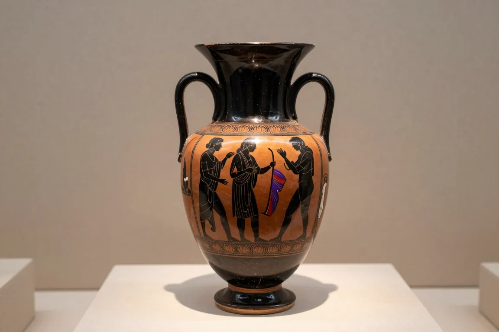

keramikk · c. 700–480 BC · også: Attisk svartfigur, Korintisk svartfigur
Greske vaser der maleren tegner figurer i en sort glansslipp på rød leire og skjærer detaljene med en skarp spiss. En brenning i tre trinn gir det sorte og det røde.

Kjerneidé
En potte er en flate for fortellinger: sorte silhuetter på rød leire, gjort skarpe med innrissede linjer, forteller en myte frise etter frise.
Designprinsipper
Mal hver figur som en heldekkende sort silhuett i glansslipp på den røde leiren.
Rist inn figurenes indre linjer med en skarp spiss, slik at den røde leiren viser under.
Legg til purpurrød og hvit slipp for kvinners hud, hår og klesaksenter.
Del potten i felt og friser som løper rundt buken i horisontale bånd.
Brenn i tre trinn: oksidasjon, reduksjon og ny oksidasjon, ved 800 til 950 °C.
Legg hovedscenen på skulderen eller buken, og et bånd av lotus og palmett under hankene.
Skriv navnet på maleren eller pottemakeren i en kort linje på vasen når den er signert.
Antimønstre
Røde figurer på svart bunn
Myk skyggelegging eller fargeoverganger inne i figuren